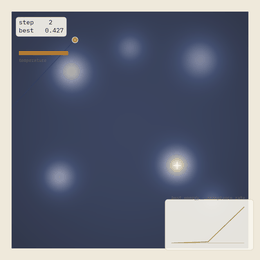
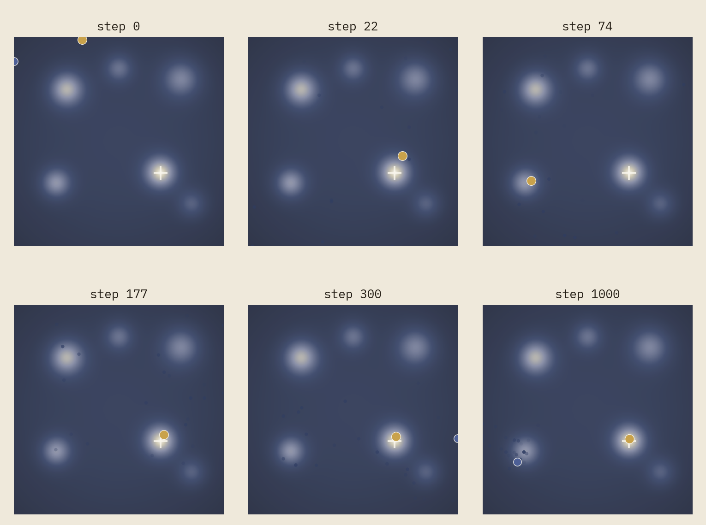
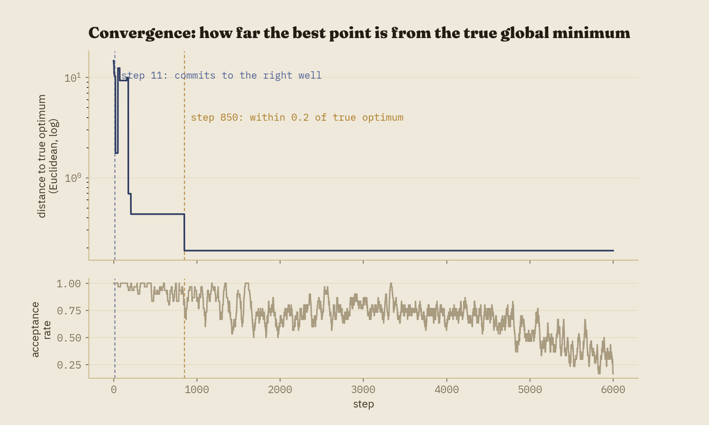

Heat a piece of metal and quench it — cool it fast — and its atoms freeze wherever they happened to be, locked into a disordered, defect-ridden structure. Cool it slowly instead and the atoms keep finding better arrangements for as long as they're still mobile enough to move, settling toward something closer to a clean crystal. Simulated annealing takes that physical process and turns it into a search algorithm, and it's the simplest mechanism in this three-part series by a wide margin: no population, no colony, just one point wandering and a single number — temperature — controlling how willing it currently is to make things worse on the way to making them better.
This is the third and final post in a series that has, each time, ended up telling a version of the same story: a genetic algorithm and an ant colony both needed deliberately weakened hyperparameters to keep from solving their problems suspiciously fast. This project needed the opposite. Simulated annealing, on a landscape built to be genuinely deceptive, turned out to be the one that needed help succeeding at all.

The rest of this post explains the mechanism, the landscape built specifically to test it, and why this project — alone among the three — needed thousands of steps rather than dozens of generations or iterations to tell an honest story.
The idea, before the machinery
Simple local search — always move to a better neighbor, stop when nothing nearby is better — is cheap and often good, but it has an obvious failure mode: it stops at the first local minimum it finds, with no way to tell whether a much better one is sitting just past a ridge it would never voluntarily cross. Simulated annealing's answer is to allow uphill moves, but only sometimes, and less and less often as the search runs. Early on, with temperature high, the search behaves almost randomly — happy to cross ridges, indifferent to short-term setbacks. As temperature falls, it behaves more and more like plain local search, until eventually it accepts nothing but improvements at all. The hope, and for well-behaved problems the mathematical guarantee under a sufficiently slow schedule, is that the search spends its early, undiscriminating phase finding the right neighborhood, and its late, disciplined phase refining within it.
The mechanism, formally
Each step proposes a small random move from the current point. If it improves the objective, it's always accepted. If it doesn't, it's accepted anyway with probability given by the Metropolis criterion:
For a proposed move with energy change \(\Delta E = E(\text{proposed}) - E(\text{current})\), the acceptance probability is
\[ P(\text{accept}) = \begin{cases} 1 & \Delta E \le 0 \\ \exp(-\Delta E / T) & \Delta E > 0 \end{cases} \]
where \(T\) is the current temperature. Large \(\Delta E\) or small \(T\) both push acceptance toward zero; small \(\Delta E\) or large \(T\) both push it toward one. This single formula is the entire mechanism — everything else in the algorithm is bookkeeping around it.
Temperature itself follows a cooling schedule. This project uses geometric cooling, \(T \leftarrow \alpha T\) for a fixed \(\alpha\) just under 1, the standard practical choice. Two others are implemented for comparison rather than use: linear cooling, and logarithmic cooling — the latter has a real theoretical guarantee (Hajek, 1988) of converging to the global optimum almost surely, but only if temperature falls proportional to \(1/\log(k)\), which is so slow it's a proof of concept rather than a usable schedule. One more detail worth naming: this implementation also shrinks the proposal's step width alongside temperature, so a cooling search's jumps visibly get shorter and not just less willing to go uphill — both signals of "settling in," reinforcing each other rather than only one being visible.
A landscape built to be deceptive
The genetic algorithm post used Rastrigin, a standard benchmark with roughly a hundred similarly-shallow local optima. That shape is wrong for this post's purpose. What annealing needs to demonstrate isn't "many similar traps" — it's one specific, plausible trap: a well deep enough that a search which stops exploring too early has every reason to believe it found the answer. That calls for something with direct control over depth and placement, so this project uses a hand-built landscape instead: a mild bowl (keeping the search roughly centered) minus six Gaussian wells of deliberately different depths. The true global minimum is only about 7% deeper than its nearest decoy — verified numerically, not just asserted, since the landscape's mild bowl term shifts the true minimum slightly off each well's raw center.

The first version of this project's hyperparameters found the true global minimum on only 9 of 20 seeds tried, usually settling into one of the five decoys instead — a genuinely different problem than either earlier project in this series faced, where the naive settings solved things too easily. The fix here wasn't to weaken anything; it was to give the search enough time at high temperature to actually distinguish "very good" from "best" before cooling took that option away. Raising the starting temperature, widening the initial proposal step, and — the change that mattered most — extending the run from 600 steps to 6,000, pushed reliability to 28 of 30 seeds (93.3%), a number that, unprompted, landed almost exactly where the genetic algorithm project's corrected defaults did. Cutting the budget back down even with proportionally faster cooling measurably hurt reliability, which was itself informative: what matters is the absolute time spent exploring, not just the total amount of cooling applied by the time the run ends.
That budget is also why this project's "step" count runs into the thousands where the other two projects' generation and iteration counts stayed in the dozens: a single SA step is one point either moving or not, a far lower-information unit than one GA generation (dozens of individuals) or one ACO iteration (dozens of full ant tours). More steps were never a sign the algorithm was struggling — they're the natural unit size for what a single step actually contains.
Reading the animation
The series' color legend gains one new, specific meaning here: amber marks the current point whenever the step that produced it was accepted despite being worse — the exact instant the Metropolis criterion does the one thing it exists to do. Gold is the best point found so far, exactly as gold has meant "current best" throughout this series. A temperature gauge, new to this project, drains left to right and shifts from amber to navy as the run cools — the same warm-to-cool metaphor as the metallurgical process the algorithm is named after.
One structural difference from the GA and ACO animations is worth calling out rather than glossing over: those two smoothly interpolate between two meaningful states — a parent and child, or the start and end of an ant's tour walk. Simulated annealing has no equivalent; a proposal is just a Gaussian jump, not a blend of anything. So instead of interpolation, this animation groups raw steps into batches that grow in size as the run progresses (small early, where the actual story happens; large late, once the search has settled and nothing changes for thousands of steps) and shows a short fading trail of the point's genuinely recent positions — jitter, honestly rendered, rather than a fabricated smooth glide.

In three dimensions
This is the one project in the series where a 3D landscape needed no justification or
substitute object — an energy surface is natively three-dimensional the same way
Rastrigin was, and this project reuses that earlier project's shaded-relief rendering
code directly, unmodified, right down to the specific computed_zorder fix
that made markers render correctly above a surface in the first place.
Implementation notes
Six files carry over from earlier projects in this series completely unmodified:
viz/theme.py, viz/fonts.py, viz/landscape_renderer.py,
viz/landscape_3d.py, utils/seeding.py, and
export/render.py. That list is longer than either earlier project's, which is
roughly what "a reusable framework" should look like by its third use rather than its
first: by now, most of what a new project in this series needs is already sitting in
src/viz/, waiting to be imported rather than rebuilt. The one function that
needed a real fix along the way — draw_trajectory_path, inherited from the
genetic algorithm project — turned out to be hard-coded against that project's specific
history schema despite looking generic. It was rewritten to take plain waypoint
coordinates instead of a whole history object, and that fix was carried backward into the
genetic algorithm project too, the same pattern as the ant colony project's
setup_3d_axes fix before it.
Every stochastic step draws from a single seeded numpy.random.Generator, so
the same seed reproduces an identical run bit-for-bit; every figure and animation in this
post was generated directly by the scripts in the repository.
Computational complexity
Each step is \(O(1)\): one proposal, one objective evaluation, one accept/reject decision — no population to evaluate, no colony to construct tours for. Over \(k\) steps, total work is \(O(k)\), the cheapest per-step cost of any algorithm in this series by a wide margin. That's also exactly why this project could afford 6,000 steps where the others used dozens: the entire tuned run completes in well under a second, and essentially all of this project's wall-clock time went into rendering rather than searching, the same as both earlier projects.
Strengths and weaknesses
The strengths: astonishingly simple to implement and reason about (the entire algorithm fits in the Metropolis criterion plus a cooling schedule), minimal memory footprint (one point, one temperature — no population or shared pheromone structure to maintain), and a real theoretical convergence guarantee under logarithmic cooling, even if that schedule is impractically slow.
The weaknesses, again demonstrated rather than just listed: with no population and no shared memory, a single run has nothing to fall back on if its one search commits to the wrong basin — this project's 93.3% reliability rate is a property of the schedule averaged over many independent runs, not a guarantee any single run carries. Performance is highly sensitive to the cooling schedule specifically, more so than either earlier project was to its own hyperparameters: this post's landscape went from a 45% success rate to 93.3% purely by giving the same search more time, with no other change to the algorithm's logic. And single-point search is inherently less parallelizable than a GA's independent fitness evaluations or an ACO colony's independent ant constructions — multiple annealing runs can go in parallel, but one run's steps are fundamentally sequential, each depending on where the last one landed.
Extensions
A few natural next steps: adaptive or reheating schedules that raise temperature again if the search appears stuck, rather than committing to one monotonic curve chosen in advance; parallel tempering, which runs several chains at different fixed temperatures and occasionally swaps their states, giving a single search some of the population-level robustness this post's single-chain version lacks; and a combinatorial variant applied to the same 17-city instance as the ant colony project, which would make a direct, apples-to-apples comparison between two metaheuristics on identical problems — something this series gestures at throughout but never quite does directly.
Code and reproducibility
A full reference implementation — the algorithm, three cooling schedules, every visualization module, the render scripts used to produce every figure and animation in this post, and a 22-test pytest suite (including a numerical check that the claimed global minimum is genuinely a local minimum and genuinely the deepest of the six basins, not just an assertion) — is available at github.com/akavosi/simulated-annealing.
References
- Kirkpatrick, S., Gelatt, C. D., & Vecchi, M. P. (1983). Optimization by Simulated Annealing. Science, 220(4598), 671-680.
- Metropolis, N., Rosenbluth, A. W., Rosenbluth, M. N., Teller, A. H., & Teller, E. (1953). Equation of State Calculations by Fast Computing Machines. The Journal of Chemical Physics, 21(6), 1087-1092.
- Hajek, B. (1988). Cooling Schedules for Optimal Annealing. Mathematics of Operations Research, 13(2), 311-329.